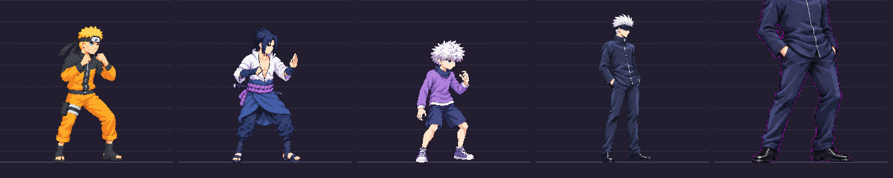
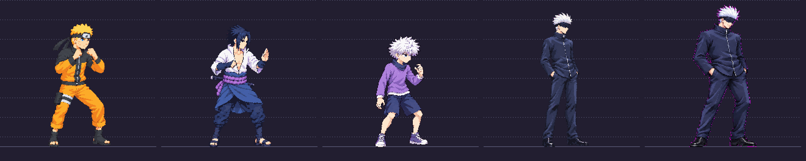

Needs review — correction recommended. The source scale, palette and profile view do not pass the brief. This is a local candidate; approved v03 still ships. No idle redraw has started.

Naruto, Sasuke, Killua, approved Gojo, candidate. The candidate is too tall at its declared scale.

Approximate height normalization for visual feedback only; this does not pass the scale gate.
